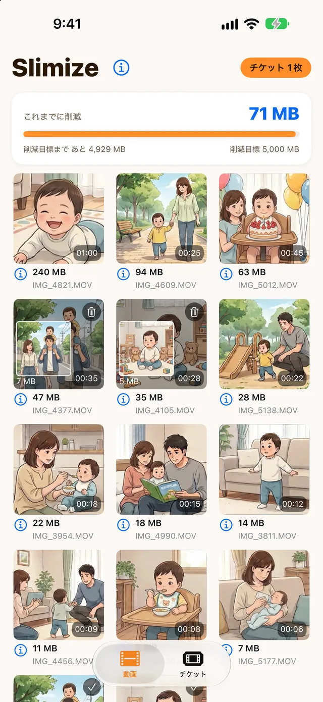
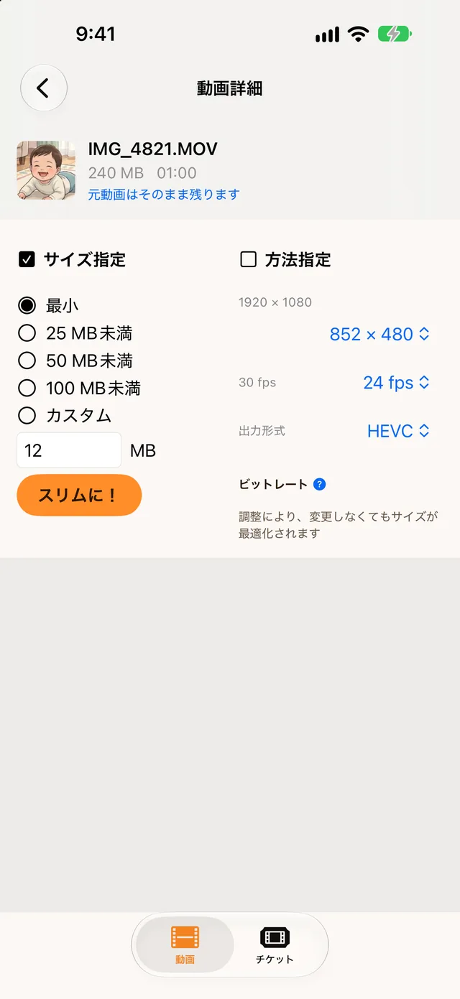
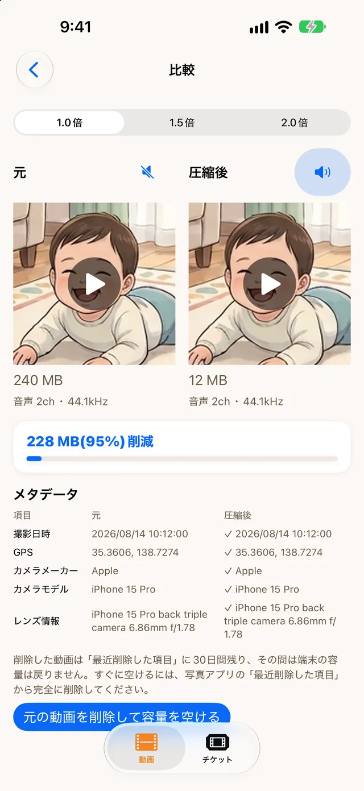

動画を、必要なサイズにスリム化。
子どもの動画を消さずに、iPhone の容量を空ける。
月額なし、必要なときだけ。
- アップロードなし
- 登録不要
- 元の動画は自分で消すまで残る

困ったときに、数分で。
毎日使うアプリではなく、困ったときに開く道具です。
消さずに、小さく。
動画を消すのではなく、サイズを小さくして容量を空けます。
大きい動画から順に並ぶ
容量を圧迫している動画が、ひと目で分かります。
サイズを選ぶだけ
「最小」「25 MB未満」などを選ぶだけ。上限を超えたときは自動で圧縮し直します。
撮影日時・位置情報を残す
保存の前に確認し、「保持／失われた／元になし」を分けて表示します。
見比べてから、元を削除
音声つきで比較できます。削除は iOS の確認画面を通します。
元の動画は変更されない
スリム化した動画は、新しい動画として保存されます。
iPhone の中だけで処理
アップロードなし・登録不要・オフラインでも使えます。
3ステップで終わります。
左右にスクロールして、3つのステップを見られます ›
- 1
選ぶ
大きい順に並んだ一覧から、スリム化したい動画を選びます。
- 2

サイズを選ぶ
「25 MB未満」などを選んで「スリムに！」を押します。
- 3

見比べて、元を削除
音声つきで見比べて、撮影日時・位置情報も確認。納得できたら元の動画を削除して、容量を空けます。
大切な動画だから。
- 動画は iPhone の外へ出さない処理はすべて端末の中。アップロードはしません。
- 元の動画は、自分で削除するまで残るアプリが勝手に消すことはありません。
- アカウント登録なしメールアドレスも名前も不要です。
- オフラインで使える通信がなくてもスリム化できます。
月額なし。課金しなくても使えます。
アプリは無料です。動画1本のスリム化に「チケット」を1枚使います。チケットは、買わなくてもたまります。
- はじめに5枚
- 毎日1枚：ログインボーナス。「チケット」タブから受け取ります。
- 削減量の節目ボーナス（2.01.01 以降）：これまでに減らした容量が 1・2・3 GB に届くと 1・2・3枚、以後は 5 GB ごとに 5枚。
- はじめの7日間の歓迎ボーナス（2.01.01 以降）：チュートリアル完了で5枚、3日連続ログインで3枚、7日連続で10枚。
有料の追加購入チケットは準備中です。現在、月額プランはありません。
気になること。
画質は落ちますか？
サイズを小さくするために圧縮するので、元の動画より画質が下がることがあります。スリム化したあとに元の動画と並べて見比べられるので、納得できてから元の動画を削除するかどうかを決められます。
撮影日時や位置情報は残りますか？
残すように処理し、保存の前に確認します。確認の結果は「保持」「失われた」「元になし」に分けて表示するので、残ったかどうかがその場で分かります。
元の動画は消えてしまいますか？
自動では消えません。スリム化した動画は新しい動画として保存され、元の動画は変更されません。元の動画を削除するのは、比較画面であなたが削除を選び、iOS の確認画面で許可したときだけです。
iPhone の容量を、今日空ける。
iOS 17 以上の iPhone 用・無料ダウンロード・アカウント登録なし